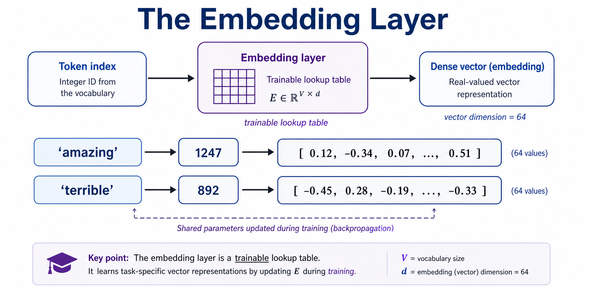
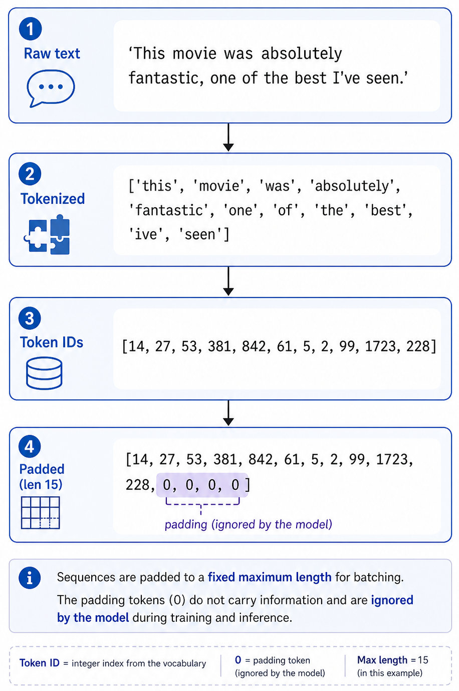
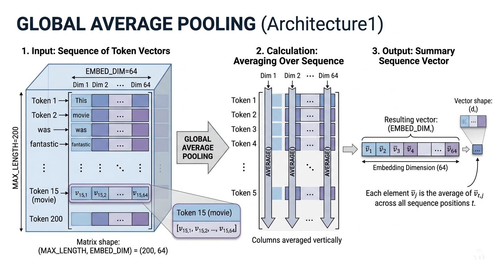
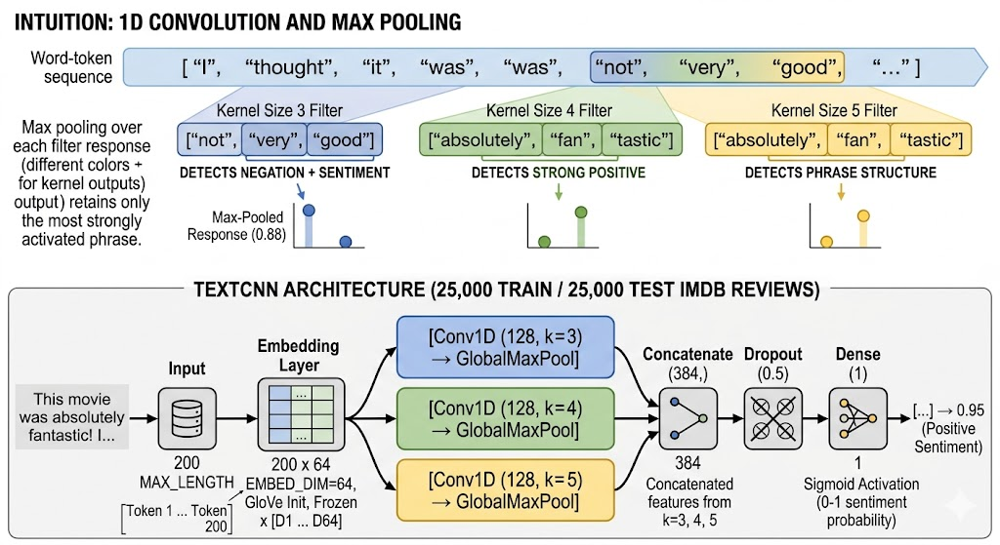
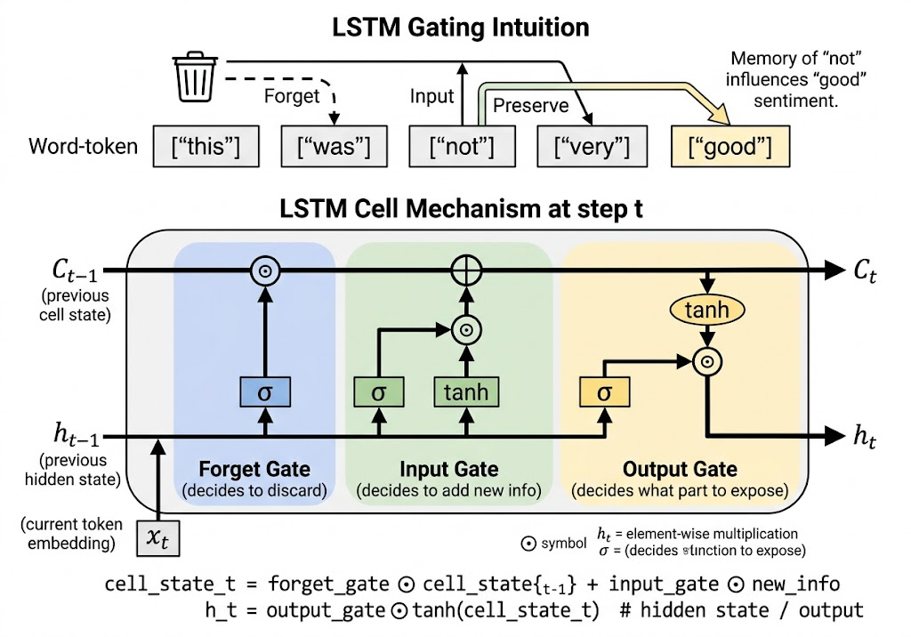

Remark
These lecture notes are in early access and will continue to evolve based on classroom experience and feedback.
3.5. Deep Learning for Text Classification#
Section Goal
By the end of this section you will understand how deep learning replaces the two-stage feature-extraction + shallow-classifier pipeline with a single end-to-end trainable model, and you will be able to implement four progressively more powerful architectures — a simple feedforward network, a convolutional network, a bidirectional LSTM, and fine-tuned BERT — and make principled decisions about when to use each one.
3.5.1. Learning objectives#
By the end of this section, you should be able to:
Explain how an embedding layer in a neural network differs from using pre-trained static embeddings as fixed features.
Describe the architecture of a feedforward text classifier and explain why global average pooling is used.
Explain how convolutional filters in a TextCNN capture local n-gram patterns.
Explain how LSTM units capture sequential dependencies and how bidirectionality helps.
Use pre-trained GloVe vectors to initialize an embedding layer and explain the trade-off between frozen and trainable embeddings.
Apply a fine-tuned BERT model to a sentiment classification task and compare its performance and computational cost to shallower alternatives.
3.5.2. From classical to deep models#
The classifiers in the previous sections combined a fixed feature extraction step (bag-of-words, word averaging, Doc2Vec) with a shallow model (Naive Bayes, Logistic Regression). This two-stage approach has a key limitation: the feature representation is fixed before the classifier is trained. The representation does not adapt to the task.
Deep learning for text collapses these two stages into a single model that jointly learns representations and a decision function from raw (or lightly preprocessed) tokens. The key building block is an embedding layer.
3.5.2.1. The embedding layer#
An embedding layer is a trainable lookup table. Unlike pre-trained Word2Vec vectors used as fixed features, the embedding layer is updated during training so that the representations are optimized directly for the downstream task. The network learns to represent words in a way that makes the classification task as easy as possible.
Warm-starting with pre-trained vectors: instead of random initialization, the embedding layer can be initialized with pre-trained GloVe or Word2Vec vectors. This gives the model a strong semantic starting point, especially useful when training data is limited.
{kind=link}

Fig. 3.16 The mechanics of an Embedding Layer acting as a trainable lookup table. The process maps a token string (e.g., ‘amazing’) to its unique vocabulary integer ID (\(1247\)), which then indexes into the weight matrix \(E \in \mathbb{R}^{V \times d}\) to retrieve a high-dimensional dense vector (\(d=64\)). These vector weights are shared parameters optimized via backpropagation during model training.#
Definition (Embedding Layer)
Given a vocabulary of size \(V\) and embedding dimension \(d\), the embedding layer maintains a weight matrix \(E \in \mathbb{R}^{V \times d}\). For a token with integer index \(i\), its embedding is [Bengio et al., 2003]:
This is a simple row-lookup — no dot-product or activation — making it computationally cheap. All rows of \(E\) are updated jointly via backpropagation during training.
3.5.2.2. The IMDB benchmark#
The IMDB Large Movie Review Dataset is used throughout this section as a consistent benchmark:
Property |
Value |
|---|---|
Total reviews |
50,000 |
Positive reviews |
25,000 (50%) |
Negative reviews |
25,000 (50%) |
Average review length |
~230 words |
Train / Test split |
25,000 / 25,000 |
The dataset is perfectly balanced, so accuracy is an honest metric. State-of-the-art models achieve 95%+; a naive majority-class baseline achieves only 50%.
3.5.3. Data preparation#
Before training any deep model we need to tokenize text, build a vocabulary, and pad or truncate sequences to a fixed length. Keras provides utilities that handle all three steps.
3.5.3.1. Loading the IMDB dataset#
Downloading data from https://storage.googleapis.com/tensorflow/tf-keras-datasets/imdb.npz
17464789/17464789 ━━━━━━━━━━━━━━━━━━━━ 0s 0us/step
Downloading data from https://storage.googleapis.com/tensorflow/tf-keras-datasets/imdb_word_index.json
1641221/1641221 ━━━━━━━━━━━━━━━━━━━━ 0s 0us/step
Training samples: 25000
Test samples: 25000
Sample review: <START> this film was just brilliant casting location scenery story direction everyone's really suited the part they played and you could just imagine being there robert <UNK> is an amazing actor and
3.5.3.2. Tokenizing and padding#
Before sequences can be fed to a neural network, raw text must pass through three steps:
Tokenization — split the string into tokens (words or subwords).
Indexing — map each token to its integer ID in the vocabulary.
Padding / truncation — adjust every sequence to the same fixed length
MAX_LENGTH.
The Keras Tokenizer handles steps 1–2; pad_sequences handles step 3.
Vocabulary size: 19,998
Training matrix shape: (25000, 200)
Test matrix shape: (25000, 200)
3.5.3.3. Why we truncate and pad#
Sequences in a batch must all be the same length for efficient GPU computation. MAX_LENGTH=200 is a practical choice for IMDB reviews: most informative content appears early in the review, and reviews longer than 200 tokens are truncated. If your task requires reading full documents, increase MAX_LENGTH (at the cost of more memory).
{kind=link}

Fig. 3.17 Example of raw text being tokenized, converted to token IDs, and padded to a fixed length for batch processing.#
Padding tokens (index 0) are added at the end to reach MAX_LENGTH. They carry no meaning and are effectively ignored by the embedding layer (their embedding vectors are close to zero after training).
Fit the tokenizer only on training data
tokenizer.fit_on_texts(X_train) must be called with training data only. The vocabulary built here is then applied — via texts_to_sequences — to both train and test sets. If you fit the tokenizer on all data (including test), you introduce data leakage: the vocabulary will include words that appear only in the test set, inflating the model’s effective vocabulary and giving it information it would not have at deployment time.
3.5.4. Architecture 1: feedforward network with a learned embedding layer#
The simplest deep text model uses global average pooling over token embeddings followed by dense layers. This is equivalent to averaging word vectors, but here the embeddings are learned jointly with the classifier.
The full forward pass can be summarised as:
where \(L\) = MAX_LENGTH = 200 and \(d\) = EMBED_DIM = 64.
{kind=link}

Fig. 3.18 A detailed visualization illustrating the mechanics of Global Average Pooling (Architecture 1). The 2D matrix of shape (MAX_LENGTH, EMBED_DIM) is presented as a stack of 200 row vectors. An explicit mathematical operation shows vertical arrows collapsing each column via averaging, transforming the matrix into a single summary 1D vector of shape (EMBED_DIM,). This visual flow explains why the operation discards word order but retains a global semantic summary.#
Model: "sequential"
┏━━━━━━━━━━━━━━━━━━━━━━━━━━━━━━━━━┳━━━━━━━━━━━━━━━━━━━━━━━━┳━━━━━━━━━━━━━━━┓ ┃ Layer (type) ┃ Output Shape ┃ Param # ┃ ┡━━━━━━━━━━━━━━━━━━━━━━━━━━━━━━━━━╇━━━━━━━━━━━━━━━━━━━━━━━━╇━━━━━━━━━━━━━━━┩ │ embedding (Embedding) │ ? │ 0 (unbuilt) │ ├─────────────────────────────────┼────────────────────────┼───────────────┤ │ global_average_pooling1d │ ? │ 0 │ │ (GlobalAveragePooling1D) │ │ │ ├─────────────────────────────────┼────────────────────────┼───────────────┤ │ dense (Dense) │ ? │ 0 (unbuilt) │ ├─────────────────────────────────┼────────────────────────┼───────────────┤ │ dense_1 (Dense) │ ? │ 0 (unbuilt) │ └─────────────────────────────────┴────────────────────────┴───────────────┘
Total params: 0 (0.00 B)
Trainable params: 0 (0.00 B)
Non-trainable params: 0 (0.00 B)
Global average pooling computes the mean of the 200 token embedding vectors, producing a single 64-dimensional vector that summarizes the entire sequence. This discards word order but is fast and often surprisingly effective for topic-based tasks like sentiment analysis.
3.5.4.1. Training and monitoring#
The global average pooling operation computes [Lin et al., 2013]:
where \(H_{t,j}\) is the \(j\)-th dimension of the embedding for token \(t\). The result \(\bar{\mathbf{h}} \in \mathbb{R}^d\) is then passed through two dense layers to produce a scalar sentiment probability.
Epoch 1/20
176/176 ━━━━━━━━━━━━━━━━━━━━ 11s 43ms/step - accuracy: 0.7060 - loss: 0.5811 - val_accuracy: 0.8324 - val_loss: 0.4123
Epoch 2/20
176/176 ━━━━━━━━━━━━━━━━━━━━ 5s 27ms/step - accuracy: 0.8608 - loss: 0.3366 - val_accuracy: 0.8604 - val_loss: 0.3335
Epoch 3/20
176/176 ━━━━━━━━━━━━━━━━━━━━ 5s 28ms/step - accuracy: 0.9030 - loss: 0.2492 - val_accuracy: 0.8784 - val_loss: 0.3123
Epoch 4/20
176/176 ━━━━━━━━━━━━━━━━━━━━ 5s 29ms/step - accuracy: 0.9228 - loss: 0.2051 - val_accuracy: 0.8812 - val_loss: 0.3060
Epoch 5/20
176/176 ━━━━━━━━━━━━━━━━━━━━ 4s 25ms/step - accuracy: 0.9390 - loss: 0.1713 - val_accuracy: 0.8836 - val_loss: 0.3116
Epoch 6/20
176/176 ━━━━━━━━━━━━━━━━━━━━ 6s 32ms/step - accuracy: 0.9527 - loss: 0.1386 - val_accuracy: 0.8836 - val_loss: 0.3267
Epoch 7/20
176/176 ━━━━━━━━━━━━━━━━━━━━ 4s 25ms/step - accuracy: 0.9602 - loss: 0.1189 - val_accuracy: 0.8652 - val_loss: 0.3620
Epoch 8/20
176/176 ━━━━━━━━━━━━━━━━━━━━ 5s 25ms/step - accuracy: 0.9681 - loss: 0.1007 - val_accuracy: 0.8792 - val_loss: 0.3582
Monitor both training accuracy and validation accuracy. If training accuracy keeps rising while validation accuracy plateaus or drops, the model is overfitting. EarlyStopping automatically halts training when validation accuracy stops improving, restoring the best weights.
What is overfitting?
Overfitting occurs when a model memorizes the training data instead of learning generalizable patterns. Symptoms:
Training accuracy continues rising while validation accuracy plateaus or decreases.
The model performs well on seen examples but poorly on new ones.
Common remedies:
Early stopping (stop when validation performance stops improving).
Dropout (randomly zero out activations during training to prevent co-adaptation).
Reduce model capacity (fewer layers, fewer neurons).
Add more training data or use data augmentation.
3.5.4.2. Typical results#
Epochs |
Train Acc |
Val Acc |
Notes |
|---|---|---|---|
1 |
~0.71 |
~0.83 |
Initial fast learning |
5 |
~0.94 |
~0.88 |
Approaching validation plateau |
10 |
~0.96+ |
~0.86–0.88 |
Clear overfitting (Val Loss rising) |
Typical test accuracy: ~86–87% — a strong baseline for such a simple model.
Note
Since our training configuration uses EarlyStopping, the actual code execution above may halt around Epoch 8. The Epoch 10 metrics in the table below represent the projected trajectory if the model is allowed to continue training without a halting callback.
3.5.5. Architecture 2: convolutional text classifier (TextCNN)#
Convolutional networks apply learned filters to local windows of token embeddings, capturing short n-gram patterns regardless of their position in the sequence.
3.5.5.1. Intuition#
A 1D convolution with kernel size 3 slides a filter across consecutive triples of token embeddings:
Tokens:
["not", "very", "good"]\(\rightarrow\) Conv filter detects “not + good” pattern.Tokens:
["absolutely", "fan", "tastic"]\(\rightarrow\) Different filter detects positive phrase.
Multiple filter widths (e.g., 3, 4, 5 tokens) capture phrases of different lengths. Max pooling over each filter response retains only the most strongly activated phrase, regardless of where in the document it appears.
1D convolution — formal definition. For a filter \(\mathbf{w} \in \mathbb{R}^{k \times d}\) of kernel size \(k\), the activation at position \(t\) is [Kim, 2014]:
where \(H_{t:t+k} \in \mathbb{R}^{k \times d}\) is the slice of the embedding matrix spanning tokens \(t\) through \(t+k-1\). The filter produces a feature map \(\mathbf{c} \in \mathbb{R}^{L-k+1}\). Global max pooling then extracts the single highest activation: \(\hat{c} = \max(\mathbf{c})\).

Fig. 3.19 1D convolution features sliding over local n-grams (top) alongside the complete parallel multi-kernel TextCNN architecture pipeline (bottom) for a 200-token IMDB review input.#
As illustrated in Fig. 3.19, the architecture processes the text through parallel convolutional pathways before combining them for the final classification:
Dropout(0.5) randomly zeroes half the merged features during training, preventing the model from overfitting to specific n-gram patterns.
3.5.5.2. Why TextCNN is effective#
TextCNN combines three properties that make it excellent for sentiment analysis:
Position invariance: max pooling means a positive phrase like “absolutely brilliant” contributes the same signal whether it appears at the start or end of the review.
n-gram coverage: multiple filter widths capture trigrams, 4-grams, and 5-grams simultaneously.
Parallelism: unlike RNNs, convolutions across different positions are computed in parallel, making TextCNN fast to train.
Typical test accuracy on IMDB: ~87–89%.
3.5.6. Architecture 3: LSTM with GloVe initialization#
Recurrent networks, specifically Long Short-Term Memory (LSTM) units, process sequences token by token while maintaining a hidden state that carries information across the sequence — allowing the model to capture long-range dependencies.
3.5.6.1. LSTM intuition#
An LSTM cell has three gates that control what information flows through the cell state:
Forget gate: Decides what old information to discard from the cell state.
Input gate: Decides what new information to add to the cell state.
Output gate: Decides what part of the cell state to expose as output.
More precisely, at each time step \(t\), given the current token embedding \(\mathbf{x}_t\) and previous hidden state \(\mathbf{h}_{t-1}\) [Hochreiter and Schmidhuber, 1997]:
The cell state and hidden state are then updated as [Hochreiter and Schmidhuber, 1997]:
where \(\sigma\) is the sigmoid function and \(\odot\) denotes element-wise multiplication. The \(W\) matrices and \(b\) bias vectors are learned during training.

Fig. 3.20 Detailed architecture of an LSTM cell at time step \(t\). The diagram illustrates how the cell state \(C_t\) is updated via additive gating (forget and input gates) and how the hidden state \(h_t\) is generated via the output gate, with explicit mapping to the descriptive math and a visual sentiment example (top) showing how the cell can maintain memory of “not” to influence the interpretation of “good.”#
As illustrated in Fig. 3.20, at each time step \(t\), the mathematical operations inside the cell are defined as follows [Hochreiter and Schmidhuber, 1997]:
Note on notation: The \(\odot\) symbol denotes element-wise multiplication. This precise gating mechanism allows the LSTM to remember that a review started with “this was not” many tokens later when it encounters the word “good.”
Why do we need gates? (Vanishing gradients)
Standard Recurrent Neural Networks (RNNs) suffer from the vanishing gradient problem: when training on long sequences via backpropagation through time, gradients decay exponentially as they flow backwards through many time steps. This makes it very hard for the model to connect information from early in the sequence to predictions made later.
LSTM gates explicitly control which information is preserved in the cell state and which is discarded. Because the cell state is updated through addition (not multiplication) at each step, gradients can flow through many time steps without vanishing. This is why LSTMs can capture dependencies over sequences of 100+ tokens, while standard RNNs typically struggle beyond 10–20 tokens.
3.5.6.2. Loading GloVe vectors#
GloVe (Global Vectors for Word Representation) vectors are pre-trained on 6 billion tokens from Wikipedia and Gigaword. Initializing the embedding layer with these vectors gives the LSTM a rich semantic starting point.
GloVe vectors can be downloaded from https://nlp.stanford.edu/projects/glove/. The file glove.6B.zip contains vectors of dimensions 50, 100, 200, and 300.
GloVe vectors loaded for 19,129 / 20,000 vocabulary words
Coverage: 95.6%
Rows corresponding to words not found in GloVe remain as all-zeros. These words start with no semantic information and are updated during fine-tuning (if embeddings are trainable).
3.5.6.3. Why GloVe coverage matters#
With MAX_VOCAB = 20000 and GLOVE_DIM = 100, a typical run finds GloVe vectors for ~97–99% of the top-20k vocabulary words. The remaining 1–3% (often proper nouns, typos, rare technical terms) start as zero vectors. Two strategies handle them:
trainable=False(frozen): zero rows stay zero. These words are invisible to the model.trainable=True(fine-tuned): zero rows are updated during training, learning task-specific representations from scratch.
For most IMDB-scale datasets, fine-tuning the embedding layer on top of GloVe initialization outperforms either purely frozen or purely random initialization.
3.5.6.4. Building the LSTM model#
Bidirectional LSTM runs the LSTM in both directions — left-to-right and right-to-left — and concatenates the outputs. This allows the model to consider both past context (words before a position) and future context (words after), which helps for tasks like sentiment where negation words early in a sentence affect the interpretation of later words.
Bidirectional concatenation. At each position \(t\), the forward LSTM produces \(\overrightarrow{h}_t\) and the backward LSTM produces \(\overleftarrow{h}_t\). The Keras Bidirectional wrapper concatenates them [Vaswani et al., 2017]:
The final hidden state \(h_T^{\text{bi}} \in \mathbb{R}^{128}\) (last time step from both directions) is passed to the dense classifier.
Frozen vs. trainable embeddings:
trainable=False: the GloVe vectors are frozen; only the LSTM and dense weights are updated. Faster training, less overfitting risk.trainable=True(fine-tuning): the embedding layer is also updated. Often improves performance if you have enough training data (~10,000+ examples).
Typical test accuracy: ~88–90%.
3.5.7. Architecture 4: fine-tuned BERT#
BERT-based models represent the current state of the art on most text classification benchmarks. Unlike the previous three architectures — which process tokens as simple indices — BERT uses a pre-trained transformer that has already learned rich, contextual representations of language from 3.3 billion words of text.
3.5.7.1. Why BERT is different#
Property |
Architectures 1–3 |
BERT |
|---|---|---|
Pre-training |
Optional (embeddings) |
Required (the whole model) |
Context |
Fixed window (CNN/LSTM) |
Full sequence (attention) |
Representation |
One vector per token |
Contextual: depends on all other tokens |
Parameters |
1M – 10M |
110M (base) |
“Contextual” means the representation of “bank” in “river bank” and “central bank” are different vectors — BERT reads both words simultaneously via self-attention and produces context-sensitive representations.
Self-attention in brief
The transformer architecture underlying BERT uses a self-attention mechanism: for each token in the sequence, the model computes a weighted combination of all other tokens’ representations, where the weights are learned based on how relevant each other token is. This allows the model to directly connect any two tokens in the sequence, regardless of their distance — solving the long-range dependency problem that LSTMs address only partially.
For a sentence like “The bank near the river was closed”, self-attention allows the model to look at “river” when computing the representation of “bank,” thereby disambiguating the sense of the word. In an LSTM, this connection must be maintained through many time steps and may be lost.
Self-attention score formula. For each layer, BERT computes attention weights between all token pairs using scaled dot-product attention [Vaswani et al., 2017]:
where \(Q\), \(K\), \(V\) are the query, key, and value matrices projected from the token representations, and \(d_k\) is the key dimension. Dividing by \(\sqrt{d_k}\) prevents the dot products from growing too large in magnitude before the softmax.
3.5.7.2. BERT tokenization#
BERT uses a WordPiece tokenizer that splits rare words into subword units:
Input: "The film was unbelievably mesmerizing and unforgettable."
BERT tokens: ["[CLS]", "the", "film", "was", "un", "##believ", "##ably",
"mes", "##mer", "##izing", "and", "un", "##forget", "##table",
".", "[SEP]"]
Notice that unbelievably is split into [“un”, “##believ”, “##ably”]. The ## prefix indicates a subword continuation. This WordPiece vocabulary (~30,000 subwords) covers virtually any English word without out-of-vocabulary issues — unlike word-level tokenizers where unseen words must be mapped to <UNK>.
The [CLS] (classification) token at the start and [SEP] (separator) token at the end are special tokens added by BERT. For classification tasks, the hidden state of the [CLS] token after the transformer layers serves as the document representation.
3.5.7.3. Fine-tuning BERT for classification#
The l305_bert_sentiment lab uses the Hugging Face transformers library to fine-tune bert-base-uncased on the IMDB dataset.
Warning: You are sending unauthenticated requests to the HF Hub. Please set a HF_TOKEN to enable higher rate limits and faster downloads.
WARNING:huggingface_hub.utils._http:Warning: You are sending unauthenticated requests to the HF Hub. Please set a HF_TOKEN to enable higher rate limits and faster downloads.
BertForSequenceClassification LOAD REPORT from: bert-base-uncased
Key | Status |
-------------------------------------------+------------+-
cls.predictions.transform.dense.weight | UNEXPECTED |
cls.predictions.transform.dense.bias | UNEXPECTED |
cls.seq_relationship.bias | UNEXPECTED |
cls.seq_relationship.weight | UNEXPECTED |
cls.predictions.transform.LayerNorm.weight | UNEXPECTED |
cls.predictions.bias | UNEXPECTED |
cls.predictions.transform.LayerNorm.bias | UNEXPECTED |
classifier.weight | MISSING |
classifier.bias | MISSING |
Notes:
- UNEXPECTED :can be ignored when loading from different task/architecture; not ok if you expect identical arch.
- MISSING :those params were newly initialized because missing from the checkpoint. Consider training on your downstream task.
Input IDs shape: torch.Size([2, 12])
Attention mask shape: torch.Size([2, 12])
Predicted probabilities: tensor([[0.6430, 0.3570],
[0.6262, 0.3738]])
The attention_mask tensor tells BERT which tokens are real (1) and which are padding (0). This prevents BERT from attending to padding tokens when computing contextual representations.
3.5.7.4. What fine-tuning actually updates#
During fine-tuning, the pre-trained BERT weights are not frozen — the entire model (all 12 transformer layers plus the new classification head) is updated via gradient descent. Two components are added on top of the pre-trained backbone:
A dropout layer (rate 0.1 by default) applied to the
[CLS]representation for regularization.A linear classification head: \(\hat{y} = W \cdot h_{\text{[CLS]}} + b\), where \(W \in \mathbb{R}^{2 \times 768}\) for binary classification.
Because BERT already encodes rich language knowledge, only 2–3 epochs of fine-tuning are typically sufficient.
3.5.7.5. Fine-tuning with the Trainer API#
| Epoch | Training Loss | Validation Loss |
|---|
Fine-tuning BERT on IMDB typically achieves over 93% accuracy — a substantial improvement over the ~88–90% achieved by well-tuned shallow models.
3.5.8. Common pitfalls and best practices#
Before interpreting results, be aware of the following common pitfalls in deep learning for text:
Pitfall |
Symptom |
Fix |
|---|---|---|
Fitting the tokenizer on all data |
Optimistically biased test metrics |
Fit tokenizer only on training text |
No early stopping |
Model overtrained; best val accuracy lost |
Use |
Padding not masked |
Model attends to padding tokens |
Use |
Wrong pooling for task |
Slow convergence |
Use CLS token pooling for BERT, global average for feedforward |
Batch size too large |
Poor generalization |
Try smaller batches (16–64) for BERT |
Gradient explosion in RNN |
|
Use gradient clipping: |
3.5.9. Choosing an architecture#
Architecture |
Captures word order? |
Pre-training needed? |
Training speed |
Typical IMDB accuracy |
|---|---|---|---|---|
Feedforward + avg pool |
No |
Optional |
Very fast |
~86–87% |
TextCNN |
Local n-grams |
Optional |
Fast |
~87–89% |
BiLSTM + GloVe |
Full sequence |
Recommended |
Moderate |
~88–90% |
Fine-tuned BERT |
Full sequence + context |
Required |
Slow |
~93%+ |
Decision guide:
Use feedforward + pooling when you need a fast, interpretable baseline or when training data is very large (millions of documents) and compute is limited.
Use TextCNN when local phrase patterns matter (e.g., sentiment, spam, short-text classification) and you need faster training than LSTM.
Use BiLSTM + GloVe when sequence order matters (e.g., narrative structure, temporal dependencies) and you have moderate amounts of labeled data.
Use fine-tuned BERT when you need the best possible accuracy, have access to GPU compute, and the performance gain justifies the training time.
For production systems with latency requirements, consider distilled models: DistilBERT has 40% fewer parameters, ~97% of BERT performance, and 60% faster inference.
3.5.10. Key takeaways#
Summary
Deep learning for text replaces the fixed feature-extraction + shallow-classifier pipeline with an end-to-end model that jointly learns representations and classification from raw tokens.
The embedding layer is a trainable lookup table that maps token indices to dense vectors; it can be initialized with pre-trained GloVe/Word2Vec vectors for a semantic head start.
TextCNN captures local n-gram patterns using parallel convolutional filters with global max pooling; it is fast, position-invariant, and effective for sentiment analysis.
Bidirectional LSTM reads the sequence forward and backward, capturing long-range dependencies including negation and sentence structure. LSTM gates solve the vanishing-gradient problem that limits standard RNNs.
Fine-tuned BERT produces context-sensitive representations by attending to all tokens simultaneously via self-attention; it achieves the highest accuracy (~93%+) at the cost of substantially more compute.
Always use early stopping and monitor both training and validation metrics; the best validation checkpoint may occur well before the maximum number of epochs.
Always fit the Keras
Tokenizeronly on training data to prevent data leakage.
3.5.11. Exercises and discussion#
Embedding layer warm-start Train the feedforward classifier (Architecture 1) twice: once with random embedding initialization and once with GloVe initialization (
trainable=False). Plot validation accuracy vs. epoch for both. Which approach learns faster? Which reaches a higher final accuracy? What happens if you settrainable=Truefor the GloVe-initialized model?Filter width ablation For the TextCNN model, train separate versions using only a single filter width (3, 4, or 5) and compare to the multi-width version. Which single filter width performs best? Why might combining multiple widths outperform any individual width?
LSTM depth Add a second LSTM layer to Architecture 3:
Bidirectional(LSTM(64, return_sequences=True))followed byBidirectional(LSTM(32)). Compare training time and test accuracy to the single-layer LSTM. What is the computational cost per additional LSTM layer?BERT vs. classical baselines BERT achieves higher accuracy than the LSTM but requires far more compute. Describe a concrete business scenario where a TF–IDF + Logistic Regression classifier (~86% accuracy) would be the better engineering choice over fine-tuned BERT (~93% accuracy). What factors would drive this decision?
Distillation trade-off (research) DistilBERT is a compressed version of BERT-base trained using knowledge distillation. Using the Hugging Face
transformerslibrary, replacebert-base-uncasedwithdistilbert-base-uncasedin the sentiment classification pipeline. Compare: (a) model file size on disk, (b) time per training epoch on the same hardware, (c) final test accuracy. Is the trade-off between accuracy and efficiency worth it for the IMDB task?